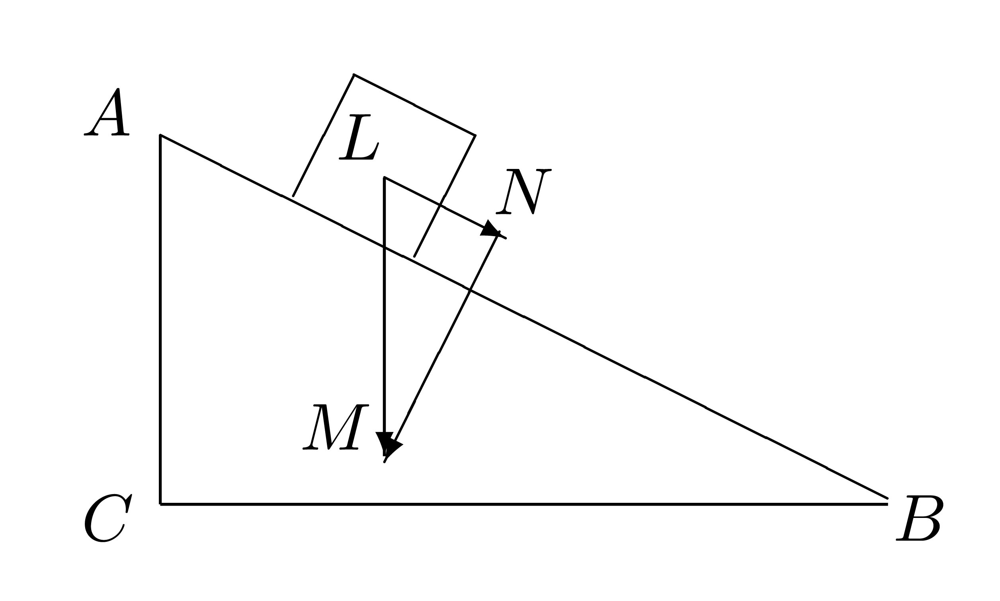

Equilibrio per traslazioni
Piano inclinato
Consideriamo un piano inclinato di altezza AC = h e lunghezza AB = l, come nella seguente figura dove, per semplicità, un carrello di massa m è rappresentato da un quadrato.

Quando l'attrito è assente, la forza totale che agisce sul carrello è data dalla componente parallela della forza-peso LM = m · g, dove g = 9.8 N / kg. La componente perpendicolare al piano della forza-peso è infatti compensata dalla reazione vincolare del piano inclinato. È facile rendersi conto che i triangoli ABC ed LMN sono simili, pertanto hanno i lati in proporzione, in particolare AB : LM = AC : LN da cui l : mg = h : LN. La componente parallela della forza-peso, che provoca lo scivolamento del corpo lungo il piano, viene pertanto ad essere uguale a LN = mgh / l.
È interessante considerare due casi limite.- Piano orizzontale: in questo caso l'altezza del piano è uguale a 0, ossia h = 0, da cui la componente parallela della forza-peso LN = 0. Rimane solo la componente perpendicolare della forza-peso che è interamente compensata dalla reazione vincolare del piano. Di conseguenza la forza totale applicata al corpo è zero e il corpo rimane in equilibrio.
- Piano verticale: in questo caso h ≈ l e la componente parallela della forza-peso viene a coincidere con la forza-peso mg. Il corpo non risente di alcuna reazione vincolare da parte del piano e cade liberamente.
Un piano inclinato (ad esempio una strada in salita o in discesa) può essere caratterizzato dalla sua pendenza percentuale, definita come il rapporto tra i due cateti del triangolo ABC, moltiplicato per 100: pendenza percentuale = AC / BC · 100.
La forza equilibrante nel caso di un piano inclinato sarà una forza diretta lungo il piano inclinato, avente la stessa intensità della componente parallela della forza-peso LN e verso opposto. Nella prossima sezione allestiremo un esperimento che ci consentirà di equilibrare con un dinamometro la componente parallela della forza-peso. In questo modo andremo anche a misurare in maniera indiretta l'intensità della componente parallela della forza-peso.